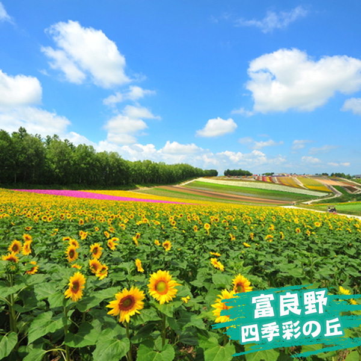

富良野 富田農場
視野遼闊、風景絕佳的四季彩之丘，面積達15公頃 ，每逢5月~10月就是色彩繽紛鮮豔的花朵開片整座山丘。
春天從鬱金香開始，6月罌粟花、7月薰衣草、8月向日葵、9月金盞花、10月掃帚草等，不管何時都會有許多美麗的花朵在迎接大家的到來。
園內NOROCCO號遊園車個非常便利的選擇。坐上遊園車，以不到10公里的時速，緩慢的穿梭在花田之中 ，而在景色非常美的地方也會停車，大家可要把握按快門的時機喔！
網走 東藻琴公園

位於北海道網走的東藻琴公園，位於鄂霍次克大空町東藻琴的藻琴山山腳下，開園時間是每年的5月3日～9月30日。
從5月中旬開始，體型很小的芝櫻，有紅色、粉紅色和白色等花朵盛開，將山麓染成一片粉紅色的花海，佈滿了整個丘陵地，猶如粉紅色地毯一般美麗，相當壯觀且迷人。